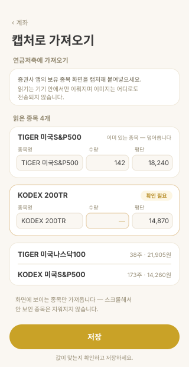
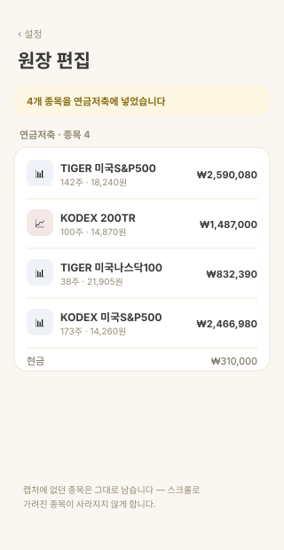

증권사 연결 없이, 어느 증권사든
증권사 계정을 연결하거나 API 키를 넣을 필요가 없습니다. 화면에 보이는 글자를 읽는 방식이라 어느 증권사 앱이든 됩니다.
- 읽는 것은 종목명 · 수량 · 매입단가입니다.
- 읽기는 기기 안에서만 이뤄지고, 이미지는 어디로도 보내지 않습니다.
- 평가액 · 수익률 · 비중은 적지 않습니다. 시세가 붙으면 앱이 계산합니다.
하는 방법
- 증권사 앱에서 보유 종목 목록이 보이는 화면을 캡처합니다.
- 골고루에서 오른쪽 위 ⋯ › 편집을 열고, 채울 계좌를 누른 뒤 캡처로 가져오기를 엽니다.
- 붙여넣기를 누르면 읽은 종목이 목록으로 나옵니다.
- 수량과 평단을 확인하고 저장합니다.


맥에서 ⌘ ⇧ 4 로 찍으면 클립보드가 아니라 파일로 저장됩니다. 그때는 파일에서 고르기로 그 이미지를 고르면 됩니다.
저장 전에 볼 두 가지
- 「확인 필요」가 붙은 줄. 글자가 흐리거나 잘려서 확신이 없는 줄입니다. 수량과 평단을 증권사 화면과 한 번 견줘 보세요.
- 이미 있는 종목. 그 계좌에 같은 종목이 있으면 새 값으로 덮어씁니다. 매수한 뒤 다시 캡처해 가져오면 수량과 평단이 갱신되는 식입니다.
아직 계좌가 없다면
처음이라면 계좌부터 만듭니다. 홈 맨 위 「예시 자산으로 보는 중」 띠의 내 자산 넣기를 누르고, 계좌 이름(예: 연금저축, 증권계좌)을 쳐서 추가하면 됩니다. 그다음 위 순서대로 캡처를 가져옵니다.
목표 비중을 정하기 어려우면 처음 화면에서 목표 비중 견본을 골라 시작할 수도 있습니다. 견본은 예시이며 투자 권유가 아닙니다.
채우고 나면
종목마다 시세가 자동으로 붙고, 계좌별 · 자산군별 비중과 목표와의 차이가 계산됩니다. 여기서부터가 골고루가 하려는 일입니다 — 흩어진 계좌를 한 화면에 모으고, 목표에서 얼마나 벌어졌는지 보는 것.
함께 보기
안드로이드 테스터 모집 중 — 뭐타지 · 복지비 청구 · 메트로놈는 아이폰에 나와 있고, 안드로이드는 구글 플레이 정식 공개 전입니다. 먼저 써 보실 분은 테스트 참여로 오세요.